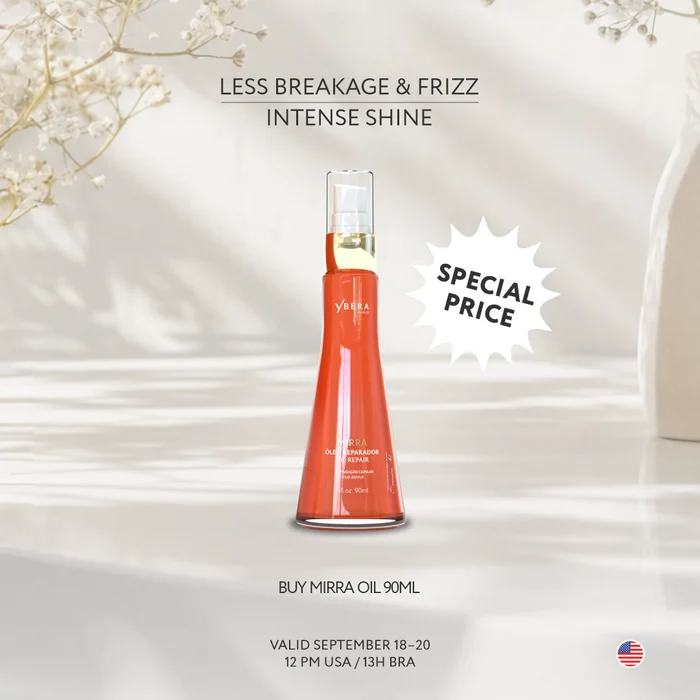

20%offMyrrh hair repair oil 90 ml | Special price
$47.92
$59.90
Offer ended
v0.12.1
Cartão grande de uma oferta única: foto ao fundo, texto por cima e relógio de prazo. Não é o cartão de catálogo com outra roupa: ali cabem doze na grade, aqui cabe um.
.yb-offercard--blur[data-encerrada]O selo de desconto aqui era um .yb-badge--sale retangular; nas
quatro homes é o selo estrelado, e
.yb-offercard__off já define --yb-offerseal-size:3.5rem
— a folha esperava a estrela, a ficha mostrava outra coisa.
Faltavam o preço anterior (__was), e a ação era
um <a> “Buy now” para o mesmo destino do título: dois
links iguais, e nenhum jeito de comprar sem sair do cartão. Hoje é
.yb-offercard__action, um <button> que abre a
sacola. E saiu o selo "Today's offer" do corpo, que repetia o que o desconto no
canto já dizia.
A foto do produto é recorte em fundo claro, não fotografia de campanha: o véu
sozinho não segura o texto. Três folhas de backdrop-filter em vez de
uma, e o alcance vem do variante, que sabe onde o texto acaba.
O relógio troca de unidade sozinho: com mais de 24h pela frente conta dias/horas/minutos, e passa para horas/min/seg nas últimas 24h, quando o segundo começa a significar alguma coisa. "672 hrs" não é prazo, é número.
Foto fotográfica ocupando o cartão inteiro, como a da referência — não recorte de produto em fundo transparente. Com recorte, o que aparece em volta do frasco é o fundo de reserva do cartão, e o cartão inteiro fica escuro. Foto recortada é o material do cartão de catálogo, que reserva um lugar próprio para ela.
O cartão é 2/3 e as fotos do catálogo são 1/1: com cover a foto
entra inteira, chão de estúdio incluso. Como o desfoque é mais forte no pé, ele
arrasta o frasco cortado para dentro do fundo liso — lê como defeito de
renderização.
object-position não resolve (não há sobra vertical para
deslocar) e zoom na folha quebraria as outras: medidas seis fotos do catálogo, a
margem morta vai de 0% a 33%. Então a medida sai da foto — o
gerador recorta em volta do produto com folga em cima e nos lados e zero
embaixo, porque o pé é do véu e do botão.
O segundo cartão tem prazo em 2020, de propósito: é o estado encerrado. Um relógio parado em zero não é contagem, é relógio quebrado prometendo urgência que já passou — o relógio sai e o cartão diz o que aconteceu.
O <time> por extenso é o que está no HTML; o script troca
pelos quadradinhos e passa a contar. Uma oferta com prazo tem de dizer o prazo
mesmo quando o script não roda.
O cartão inteiro leva à PDP; o botão põe na sacola e não leva a lugar
nenhum. O alvo do cartão é um <a> vazio esticado por
cima, com aria-labelledby apontando para o título — e não um
::after no título, porque o corpo é posicionado por causa do véu
e o recorte pararia nele, deixando a foto sem alvo.
O botão fica acima do link esticado no empilhamento. Sem isso o clique nele cairia na PDP em vez de comprar.
Na referência ele é branco sobre a foto. Aqui segue a ação canônica do sistema — o mesmo magenta de todo "Add to cart". Botão de compra que muda de cor conforme o fundo ensina o cliente a procurar duas coisas diferentes.
O mesmo HTML que renderizou acima.
<article class="yb-offercard yb-offercard--blur">
<img src="../pages/img/Off2_Set_18-20-9_1-081255.webp" alt="">
<span class="yb-offerseal yb-offerseal--sale yb-offercard__off"><b class="yb-offerseal__value">20%</b><span class="yb-offerseal__label">off</span></span>
<div class="yb-offercard__blur" aria-hidden="true"><i></i><i></i><i></i></div>
<a class="yb-offercard__link" href="#demos" aria-labelledby="oferta-demo-1"></a>
<div class="yb-offercard__body">
<h3 class="yb-offercard__title" id="oferta-demo-1">Myrrh hair repair oil 90 ml | Special price</h3>
<div class="yb-offercard__linha">
<span class="yb-offercard__price">$47.92</span>
<s class="yb-offercard__was">$59.90</s>
<p class="yb-offercard__timer" data-yb-countdown="2026-09-27T23:59:59Z"><time datetime="2026-09-27">Sep 27</time></p>
</div>
<p class="yb-offercard__fim" hidden>Offer ended</p>
<button class="yb-btn yb-btn--primary yb-offercard__action" type="button"
data-yb-open="cart" aria-label="Add to cart: Myrrh hair repair oil">Add to cart</button>
</div>
</article>.yb-offerseal, outra peça, posicionado pelo cartão.De que a peça é feita, o que ela aceita e os tokens que consome — estes do mais específico desta peça para o mais compartilhado com o resto do sistema. Tudo lido da folha de estilo e do HTML a cada build: se estiver errado aqui, o errado é o código.
De que é feita
Átomos
Modificadores.yb-offercard--blur
Elementos.yb-offercard__action .yb-offercard__blur .yb-offercard__body .yb-offercard__chip .yb-offercard__fim .yb-offercard__linha .yb-offercard__link .yb-offercard__off .yb-offercard__price .yb-offercard__sep .yb-offercard__timer .yb-offercard__title .yb-offercard__was
Estados que a folha trata:focus-visible · :hover
ComportamentoPrecisa de ybera-behavior.js. Sem ele renderiza e não responde.
Tokens 47
Cor 3
--yb-text-secondary-inverse#DADADB--yb-bg-inverse#1E1E1F--yb-text-inverse#FFFFFFTipografia 12
--yb-type-h3-weight600--yb-type-h3-line1.35--yb-type-h3-track-0.015em--yb-type-h3-size1.5rem--yb-type-h2-size2rem--yb-type-body-lg-size1.125rem--yb-font-weight-medium500--yb-line-height-none1--yb-font-weight-bold700--yb-type-body-size1rem--yb-type-caption-size0.8125rem--yb-type-body-sm-size0.875remEspaço 6
--yb-space-10.25rem--yb-space-61.5rem--yb-space-51.25rem--yb-space-20.5rem--yb-space-41rem--yb-space-30.75remForma 3
--yb-aspect-tall2 / 3--yb-radius-card8px--yb-radius-control8pxElevação 17
--yb-scrim-strongrgba(30, 30, 31, .72)--yb-blur-ate--yb-blur-band--yb-blur-de--yb-blur-f--yb-blur-falloff--yb-blur-radius--yb-blur-reach--yb-scrim-curve-1rgba(30, 30, 31, .12)--yb-scrim-curve-2rgba(30, 30, 31, .385)--yb-scrim-curve-3rgba(30, 30, 31, .65)--yb-scrim-fullrgba(30, 30, 31, .77)--yb-scrim-litergba(30, 30, 31, .65)--yb-scrim-lite-curve-1rgba(30, 30, 31, .101)--yb-scrim-lite-curve-2rgba(30, 30, 31, .325)--yb-scrim-lite-curve-3rgba(30, 30, 31, .549)--yb-scrim-nonergba(30, 30, 31, 0)Estado 4
--yb-transition-surface180ms cubic-bezier(.2, 0, 0, 1)--yb-focus-color#CA235F--yb-focus-offset2px--yb-focus-width2px--yb-veil-avanco--yb-veil-fall✓ Faça
O número em texto, a cor como reforço.
✕ Não faça
Só a cor do preço para dizer que há desconto: quem não distingue a diferença vê dois números sem relação.
aria-live="polite" — ou de nenhuma live region. Atualizar o segundo sem dizer nada engana; atualizar com assertive interrompe a leitura a cada segundo.alt="" quando o preço e o nome já estão em texto ao lado.Gerada de molecules/pecas/offercard.html e
molecules/ybera-molecules.css. Não edite à mão: ./build.sh.